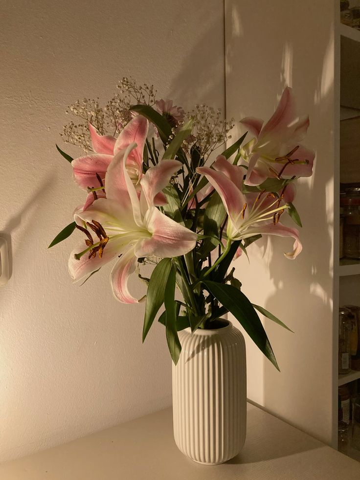

Когда принесёшь букет домой, подготовь чистую вазу и свежую воду. Перед тем как поставить цветы, удали листья, которые окажутся под водой: в воде они могут начать портиться.

Чтобы букет дольше оставался красивым, каждый день проверяй воду и состояние цветов. Если флорист приложил пакетик подкормки, следуй инструкции на нём.
У разных цветов могут быть свои особенности, поэтому при покупке спроси флориста, как лучше ухаживать именно за этим букетом.
Дополнительные советы по уходу: В видео